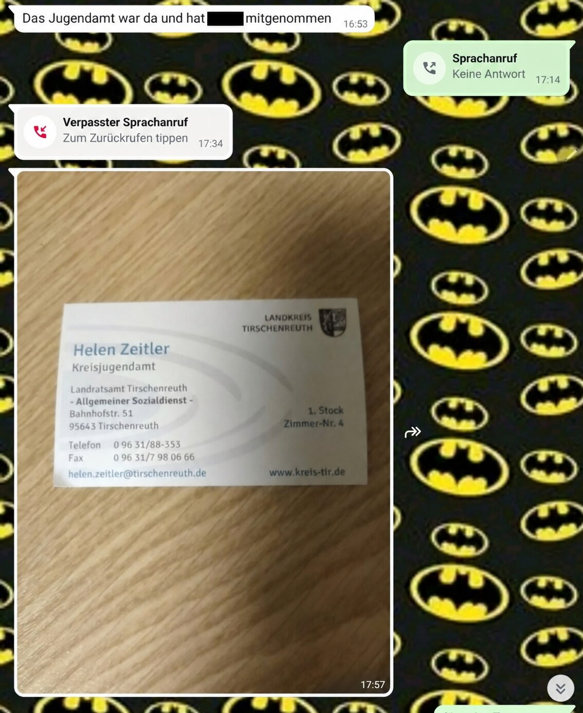

Offener Brief
An das Kreisjugendamt Tirschenreuth
Eine Visitenkarte ersetzt keine Antworten
Veröffentlicht am 10. September 2026 auf Systemfehler Familie
Ich fordere nachvollziehbare Antworten zur Inobhutnahme meines Sohnes, zur beantragten Akteneinsicht, zur Hilfeplanung, zu unseren Kontakten sowie zu seiner schulischen und gesundheitlichen Versorgung.
Transparenzhinweis: Dieser Brief gibt die persönliche Darstellung der Verfasserin auf Grundlage ihrer Unterlagen wieder. Nicht öffentliche Dokumente und besonders sensible Einzelheiten werden nicht veröffentlicht und konnten redaktionell nicht unabhängig geprüft werden. Ungeklärte Punkte sind deshalb als Fragen formuliert. Der Name des Kindes ist nicht genannt und auf dem Bild geschwärzt. Eine sachliche Stellungnahme des Jugendamtes wird auf Wunsch veröffentlicht; belegte Fehler werden transparent korrigiert.
An das Kreisjugendamt Tirschenreuth
z. Hd. Frau Helen Küspert – in meinen Unterlagen vom November 2025 unter dem Namen Helen Zeitler geführt –
z. Hd. Frau Sabine Konrad, Sachgebietsleitung,
sowie an die zuständige Leitung des Landratsamtes Tirschenreuth
Sehr geehrte Frau Küspert,
sehr geehrte Frau Konrad,
sehr geehrte Damen und Herren,
mein Sohn wurde am 12. November 2025 durch das Kreisjugendamt Tirschenreuth in Obhut genommen. Nach meiner Darstellung erfuhr ich davon zunächst durch eine Nachricht und eine abfotografierte Visitenkarte. Bis heute sind aus meiner Sicht zentrale Fragen zu Rechtsgrundlage, Akteneinsicht, Hilfeplanung, Kontakten, Versorgung und Perspektive nicht vollständig und nachvollziehbar beantwortet.
So habe ich von der Inobhutnahme erfahren
Die folgende Nachricht erreichte mich am 12. November 2025 um 16:53 Uhr. Gemeinsam mit der Visitenkarte war sie nach meiner Darstellung die erste konkrete Information, dass das Jugendamt meinen Sohn mitgenommen hatte.

Die Bilder dokumentieren die von mir geschilderte Kommunikationssituation. Für sich allein beweisen sie nicht, ob die Maßnahme rechtmäßig oder rechtswidrig war.
Eine Visitenkarte ersetzt keine verständliche Unterrichtung über eine so einschneidende Maßnahme. Sie ersetzt weder eine nachvollziehbare Begründung noch Akteneinsicht, Hilfeplanung oder Antworten auf wiederholt gestellte Fragen.
Frau Küspert – sind Sie jetzt die bessere Mutter?
Diese Frage ist bewusst zugespitzt. Sie richtet sich ausschließlich an Ihre berufliche Verantwortung und nicht gegen Ihr Privatleben. Ich behaupte ausdrücklich nicht, dass das Jugendamt durch eine Inobhutnahme automatisch die gesamte elterliche Sorge oder sämtliche elterlichen Pflichten übernimmt.
§ 42 Absatz 2 SGB VIII verpflichtet das Jugendamt während einer Inobhutnahme, für das Wohl des Kindes zu sorgen sowie den notwendigen Unterhalt und die Krankenhilfe sicherzustellen. Das Jugendamt darf die notwendigen Rechtshandlungen vornehmen; der mutmaßliche Wille der Sorge- oder Erziehungsberechtigten ist angemessen zu berücksichtigen.
Nach § 42 Absatz 3 SGB VIII müssen Sorge- oder Erziehungsberechtigte unverzüglich unterrichtet und verständlich über die Maßnahme aufgeklärt werden. Wenn die Inobhutnahme später beendet und durch eine andere Hilfe ersetzt wurde, muss nachvollziehbar sein, wann dies geschah, welche Rechtsgrundlage heute gilt und welche Verantwortlichkeiten bei wem liegen.
Meine eigentliche Frage lautet deshalb: Wenn eine Behörde tief in das Eltern-Kind-Verhältnis eingreift und Verantwortung für Schutz, Unterbringung, Hilfeplanung und Versorgung trägt – warum erhalte ich bis heute keine vollständigen, überprüfbaren Antworten?
Meine offenen Fragen
1. Rechtsgrundlage und heutiger Status
- Auf welcher konkreten Rechtsgrundlage wurde mein Sohn am 12. November 2025 in Obhut genommen?
- Wann und durch welche dokumentierte Entscheidung endete die Inobhutnahme nach § 42 SGB VIII?
- Auf welcher Rechtsgrundlage ist mein Sohn heute außerhalb meines Haushalts untergebracht?
- Welche Entscheidungsbefugnisse liegen beim Jugendamt, bei einem Pfleger oder einer anderen Stelle – und welche Rechte und Pflichten verbleiben bei mir?
2. Meine Schreiben und die Akteneinsicht
Ich habe wiederholt schriftlich um Klärung gebeten, Akteneinsicht nach § 25 SGB X beantragt und ein Auskunftsersuchen nach Artikel 15 DSGVO in Verbindung mit § 83 SGB X gestellt. Eine vollständige Akteneinsicht und eine vollständige nummerierte Antwort liegen mir nach meinem Kenntnisstand bis zum Veröffentlichungstag nicht vor.
- Welche meiner Schreiben sind beim Jugendamt eingegangen und welchem Vorgang wurden sie zugeordnet?
- Wann erhalte ich Einsicht in die für die Wahrnehmung meiner Rechte erforderlichen Aktenbestandteile?
- Welche Bestandteile werden gegebenenfalls zurückgehalten, und auf welche konkrete Rechtsgrundlage wird dies jeweils gestützt?
- Wann wird mein datenschutzrechtliches Auskunftsersuchen vollständig beantwortet?
3. Hilfeplanung und Rückkehrperspektive
- Welche aktuellen Ziele, Leistungen, Verantwortlichkeiten und Prüftermine sind im Hilfeplan festgehalten?
- Wie wurden mein Sohn und ich an der Hilfeplanung beteiligt?
- Wie ist die nach § 37c SGB VIII erforderliche Perspektivklärung dokumentiert?
- Welche konkreten Hilfen werden mir angeboten, damit eine Rückkehr meines Sohnes geprüft und vorbereitet werden kann?
- Wann findet das nächste Hilfeplangespräch statt?
4. Persönlicher Umgang und Telefonkontakte
Meine zusammengefasste Telefonaufstellung enthält 31 vorgesehene beziehungsweise ersetzte Kontakttermine, 65 ausgehende Anrufversuche, 33 Verbindungen und 32 Versuche ohne Verbindung. Ich bitte um einen Abgleich mit den technischen und pädagogischen Aufzeichnungen der beteiligten Stellen.
- Wie werden künftig verlässliche, altersgerechte und möglichst ungestörte Telefonkontakte gewährleistet?
- Auf welcher dokumentierten Grundlage werden Gespräche gegebenenfalls begleitet oder über Lautsprecher geführt?
- Wer darf dabei mithören, was wird dokumentiert und wie lange werden diese Angaben gespeichert?
- Welche persönlichen Umgangskontakte sind künftig vorgesehen und wer organisiert sie?
5. Gesundheit, Schule und Alltag
Ich veröffentliche bewusst keine Diagnosen, Behandlungsunterlagen, Schulnamen oder Zeugnisse. Als Mutter benötige ich dennoch klare Informationen über die Versorgung und Entwicklung meines Sohnes.
- Welche medizinische und zahnärztliche Versorgung wurde veranlasst, welcher weitere Bedarf besteht und welche Informationen darf beziehungsweise muss ich erhalten?
- Welche Unterrichtsform besucht mein Sohn derzeit: Regelunterricht, Förderunterricht oder Einzelunterricht?
- In welchem Umfang findet der Unterricht statt und wie wird sein Lernstand dokumentiert?
- Wie werden Kleidung, Ernährung, Bewegung, Freizeit, Kontakte zu Freunden und persönliche Bedürfnisse sichergestellt?
- Wie und wann werde ich über wichtige schulische, gesundheitliche oder sonstige Entwicklungen informiert?
Meine Forderungen
Ich bitte das Kreisjugendamt Tirschenreuth um:
- eine schriftliche Eingangsbestätigung und die Benennung einer verantwortlichen Ansprechperson innerhalb von sieben Kalendertagen,
- einen konkreten Termin oder einen verbindlichen Zeitplan für die Akteneinsicht innerhalb von 14 Kalendertagen,
- eine vollständige, nummerierte Antwort auf die vorstehenden Fragen innerhalb von vier Wochen,
- eine gesonderte Bearbeitung des Auskunftsersuchens nach Artikel 15 DSGVO innerhalb der dafür geltenden gesetzlichen Frist.
Diese von mir gesetzten Zeiträume werden nicht als eigenständige gesetzliche Entscheidungsfristen ausgegeben. Sollte eine vollständige Bearbeitung nicht möglich sein, erwarte ich eine konkrete Zwischennachricht mit Bearbeitungsstand und Abschlussdatum.
Es geht nicht um eine persönliche Herabsetzung. Es geht um nachvollziehbares Verwaltungshandeln, um mein Verhältnis zu meinem Sohn und um seine Gesundheit, Bildung, Versorgung und Zukunft.
Eine Visitenkarte war der Anfang. Sie darf nicht die letzte klare Information bleiben.
Mit freundlichen Grüßen
Die Mutter des betroffenen Kindes
Recht auf Antwort und Gegendarstellung: Das Kreisjugendamt Tirschenreuth, Frau Küspert, Frau Konrad und die zuständige Leitung sind ausdrücklich zur sachlichen Stellungnahme eingeladen. Eine Antwort wird auf Wunsch vollständig und ohne sinnentstellende Kürzung veröffentlicht. Nachweislich unrichtige Angaben werden transparent berichtigt.
Öffentlich überprüfbare Rechtsgrundlagen
- § 42 SGB VIII – Inobhutnahme von Kindern und Jugendlichen
- § 25 SGB X – Akteneinsicht durch Beteiligte
- § 83 SGB X – Auskunftsrecht der betroffenen Personen
- § 36 SGB VIII – Mitwirkung und Hilfeplan
- § 37 SGB VIII – Beratung und Unterstützung der Eltern
- § 37c SGB VIII – Perspektivklärung bei Hilfen außerhalb der eigenen Familie
- Artikel 15 DSGVO – Auskunftsrecht
Hinweis: Dieser Beitrag dokumentiert eine persönliche Erfahrung und ersetzt keine individuelle Rechtsberatung. Stand: 10. September 2026.